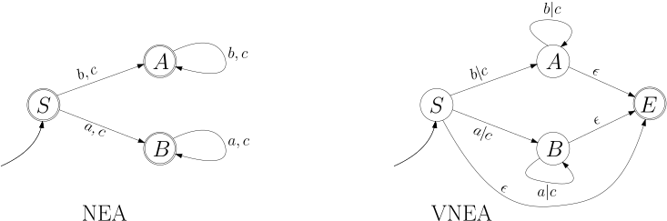
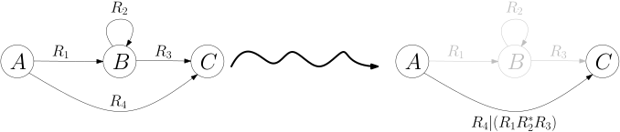
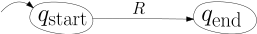
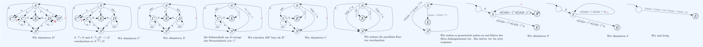

5.6 Reguläre Ausdrücke./course1/wly/05/06-regular-expressions.wly:2:11
Wir werden nun eine weitere Weise finden, reguläre./course1/wly/05/06-regular-expressions.wly:4:5 Sprachen zu beschreiben: neben regulären Grammatik (ob./course1/wly/05/06-regular-expressions.wly:5:5 normal, erweitert, eingeschränkt), endlichen Automaten und./course1/wly/05/06-regular-expressions.wly:6:5 nichtdeterministischen endlichen Automaten gibt es noch die./course1/wly/05/06-regular-expressions.wly:7:5 ./course1/wly/05/06-regular-expressions.wly:8:5regulären Ausdrücke./course1/wly/05/06-regular-expressions.wly:8:6../course1/wly/05/06-regular-expressions.wly:8:26 Dies wird wahrscheinlich von allen./course1/wly/05/06-regular-expressions.wly:8:26 Beschreibungsweise die sein, mit der Sie in der Praxis am./course1/wly/05/06-regular-expressions.wly:9:5 ehesten in Berührung kommen. Wir haben bereits in ./course1/wly/05/06-regular-expressions.wly:10:5Kapitel das Baukastenprinzip kennengelernt:./course1/wly/05/06-regular-expressions.wly:11:5
-
Wenn ./course1/wly/05/06-regular-expressions.wly:15:13$L_1$./course1/wly/05/06-regular-expressions.wly:15:18 und ./course1/wly/05/06-regular-expressions.wly:15:23$L_2$./course1/wly/05/06-regular-expressions.wly:15:28 reguläre Sprachen sind, dann ist./course1/wly/05/06-regular-expressions.wly:15:33 ./course1/wly/05/06-regular-expressions.wly:16:13$L_1 \cup L_2$./course1/wly/05/06-regular-expressions.wly:16:13 auch regulär;./course1/wly/05/06-regular-expressions.wly:16:27
-
dann ist auch die Konkatenation./course1/wly/05/06-regular-expressions.wly:19:13
$$ \begin{align*} L_1 \circ L_2 := \{\alpha \beta \ | \alpha \in L_1, \beta \in L_2\} \end{align*} $$./course1/wly/05/06-regular-expressions.wly:21:13regulär;./course1/wly/05/06-regular-expressions.wly:25:13
-
wenn ./course1/wly/05/06-regular-expressions.wly:28:13$L$./course1/wly/05/06-regular-expressions.wly:28:18 regulär ist, dann ist auch ihre Kleenesche Hülle./course1/wly/05/06-regular-expressions.wly:28:21
$$ \begin{align*} L^* := \{ \alpha_1 \dots \alpha_n \ | \ n \geq 0, \alpha_1,\dots,\alpha_n \in L\} \end{align*} $$./course1/wly/05/06-regular-expressions.wly:30:13regulär../course1/wly/05/06-regular-expressions.wly:34:13
Darüberhinaus haben wir Techniken kennengelernt, um aus./course1/wly/05/06-regular-expressions.wly:36:5 den gegebenen regulären Grammatiken eine neue Grammatik für./course1/wly/05/06-regular-expressions.wly:37:5 ./course1/wly/05/06-regular-expressions.wly:38:5$L_1 \cup L_2$./course1/wly/05/06-regular-expressions.wly:38:5,./course1/wly/05/06-regular-expressions.wly:38:19 ./course1/wly/05/06-regular-expressions.wly:38:19$L_1 \circ L_2$./course1/wly/05/06-regular-expressions.wly:38:21 und ./course1/wly/05/06-regular-expressions.wly:38:36$L$./course1/wly/05/06-regular-expressions.wly:38:41 konstruieren zu./course1/wly/05/06-regular-expressions.wly:38:44 können. Sie sollten sich jetzt folgende Frage stellen:./course1/wly/05/06-regular-expressions.wly:39:5
Frage:./course1/wly/05/06-regular-expressions.wly:43:10 Können ./course1/wly/05/06-regular-expressions.wly:43:17alle./course1/wly/05/06-regular-expressions.wly:43:26 regulären Sprachen nach diesem./course1/wly/05/06-regular-expressions.wly:43:31 Baukastenprinzip erstellt werden?./course1/wly/05/06-regular-expressions.wly:44:9
Damit diese Frage überhaupt die Chance hat, mit ./course1/wly/05/06-regular-expressions.wly:46:5ja./course1/wly/05/06-regular-expressions.wly:46:54 ./course1/wly/05/06-regular-expressions.wly:46:57 beantwortet zu werden, müssen wir "Atome" zur Verfügung./course1/wly/05/06-regular-expressions.wly:47:5 stellen, mit denen wir beginnen können. Daher:./course1/wly/05/06-regular-expressions.wly:48:5
-
Die Sprachen ./course1/wly/05/06-regular-expressions.wly:52:13$\emptyset$./course1/wly/05/06-regular-expressions.wly:52:26,./course1/wly/05/06-regular-expressions.wly:52:37 ./course1/wly/05/06-regular-expressions.wly:52:37$\{\epsilon\}$./course1/wly/05/06-regular-expressions.wly:52:39 und ./course1/wly/05/06-regular-expressions.wly:52:53$\{x\}$./course1/wly/05/06-regular-expressions.wly:52:58 für./course1/wly/05/06-regular-expressions.wly:52:65 jedes ./course1/wly/05/06-regular-expressions.wly:53:13$x \in \Sigma$./course1/wly/05/06-regular-expressions.wly:53:19 sind regulär../course1/wly/05/06-regular-expressions.wly:53:33
Aus diesen ./course1/wly/05/06-regular-expressions.wly:55:5$|\Sigma|+2$./course1/wly/05/06-regular-expressions.wly:55:16 "Grundbausteinen" und den drei./course1/wly/05/06-regular-expressions.wly:55:28 Kombinatoren ./course1/wly/05/06-regular-expressions.wly:56:5$\cup$./course1/wly/05/06-regular-expressions.wly:56:18,./course1/wly/05/06-regular-expressions.wly:56:24 ./course1/wly/05/06-regular-expressions.wly:56:24$\circ$./course1/wly/05/06-regular-expressions.wly:56:26 und ./course1/wly/05/06-regular-expressions.wly:56:33$^*$./course1/wly/05/06-regular-expressions.wly:56:38 können Sie jede./course1/wly/05/06-regular-expressions.wly:56:42 reguläre Sprache zusammenbauen. Dieses Baukastenprinzip hat./course1/wly/05/06-regular-expressions.wly:57:5 auch einen Namen: reguläre Ausdrücke. Definieren wir diese./course1/wly/05/06-regular-expressions.wly:58:5 nun formal../course1/wly/05/06-regular-expressions.wly:59:5
Definition 5.6.1./course1/wly/05/06-regular-expressions.wly:61:5 ./course1/wly/05/06-regular-expressions.wly:61:5 Sei ./course1/wly/05/06-regular-expressions.wly:62:9$\Sigma$./course1/wly/05/06-regular-expressions.wly:62:13 einendliches Alphabet. Die regulären Audrücke./course1/wly/05/06-regular-expressions.wly:62:21 über ./course1/wly/05/06-regular-expressions.wly:63:9$\Sigma$./course1/wly/05/06-regular-expressions.wly:63:14 sind induktiv definiert wie folgt und./course1/wly/05/06-regular-expressions.wly:63:22 beschreiben folgende Sprachen:./course1/wly/05/06-regular-expressions.wly:64:9
-
Atome../course1/wly/05/06-regular-expressions.wly:68:18 ./course1/wly/05/06-regular-expressions.wly:68:25$\emptyset$./course1/wly/05/06-regular-expressions.wly:68:26 ist ein regulärer Ausdruck und./course1/wly/05/06-regular-expressions.wly:68:37 beschreibt die Sprache ./course1/wly/05/06-regular-expressions.wly:69:17$\emptyset$./course1/wly/05/06-regular-expressions.wly:69:40../course1/wly/05/06-regular-expressions.wly:69:51 ./course1/wly/05/06-regular-expressions.wly:69:51$\epsilon$./course1/wly/05/06-regular-expressions.wly:69:53 ist ein./course1/wly/05/06-regular-expressions.wly:69:63 regulärer Ausdruck und beschreibt die Sprache./course1/wly/05/06-regular-expressions.wly:70:17 ./course1/wly/05/06-regular-expressions.wly:71:17$\{\epsilon\}$./course1/wly/05/06-regular-expressions.wly:71:17../course1/wly/05/06-regular-expressions.wly:71:31 Jedes einzelne Zeichen ./course1/wly/05/06-regular-expressions.wly:71:31$x \in \Sigma$./course1/wly/05/06-regular-expressions.wly:71:56 ist./course1/wly/05/06-regular-expressions.wly:71:70 ein regulärer Ausdruck und beschreibt die Sprache ./course1/wly/05/06-regular-expressions.wly:72:17$\{x\}$./course1/wly/05/06-regular-expressions.wly:72:67../course1/wly/05/06-regular-expressions.wly:72:74
-
Alternative../course1/wly/05/06-regular-expressions.wly:75:18 Wenn ./course1/wly/05/06-regular-expressions.wly:75:31$R_1, R_2$./course1/wly/05/06-regular-expressions.wly:75:37 reguläre Ausdrücke über./course1/wly/05/06-regular-expressions.wly:75:47 ./course1/wly/05/06-regular-expressions.wly:76:17$\Sigma$./course1/wly/05/06-regular-expressions.wly:76:17 sind und die Sprachen ./course1/wly/05/06-regular-expressions.wly:76:25$L_1$./course1/wly/05/06-regular-expressions.wly:76:48 und ./course1/wly/05/06-regular-expressions.wly:76:53$L_2$./course1/wly/05/06-regular-expressions.wly:76:58 ./course1/wly/05/06-regular-expressions.wly:76:63 beschreiben, so ist ./course1/wly/05/06-regular-expressions.wly:77:17$(R_1 | R_2)$./course1/wly/05/06-regular-expressions.wly:77:37 ein regulärer Ausdruck./course1/wly/05/06-regular-expressions.wly:77:50 und beschreibt die Sprache ./course1/wly/05/06-regular-expressions.wly:78:17$L_1 \cup L_2$./course1/wly/05/06-regular-expressions.wly:78:44 (die regulär./course1/wly/05/06-regular-expressions.wly:78:58 ist, wie wir in ./course1/wly/05/06-regular-expressions.wly:79:17Kapitel gesehen haben)../course1/wly/05/06-regular-expressions.wly:79:17
-
Konkatenation../course1/wly/05/06-regular-expressions.wly:82:18 ./course1/wly/05/06-regular-expressions.wly:82:33$(R_1R_2)$./course1/wly/05/06-regular-expressions.wly:82:34 ist ein regulärer Ausdruck,./course1/wly/05/06-regular-expressions.wly:82:44 der die Sprache ./course1/wly/05/06-regular-expressions.wly:83:17$L_1 \circ L_2$./course1/wly/05/06-regular-expressions.wly:83:33 beschreibt (die auch./course1/wly/05/06-regular-expressions.wly:83:48 wiederum regulär ist). Der Deutlichkeit halber schreiben./course1/wly/05/06-regular-expressions.wly:84:17 wir auch manchmal ./course1/wly/05/06-regular-expressions.wly:85:17$R_1 \circ R_2$./course1/wly/05/06-regular-expressions.wly:85:35../course1/wly/05/06-regular-expressions.wly:85:50
-
Kleenesche Hülle../course1/wly/05/06-regular-expressions.wly:88:18 Wenn ./course1/wly/05/06-regular-expressions.wly:88:36$R$./course1/wly/05/06-regular-expressions.wly:88:42 ein regulärer Ausdruck ist./course1/wly/05/06-regular-expressions.wly:88:45 und die Sprache ./course1/wly/05/06-regular-expressions.wly:89:17$L$./course1/wly/05/06-regular-expressions.wly:89:33 beschreibt, dann ist ./course1/wly/05/06-regular-expressions.wly:89:36$(R^*)$./course1/wly/05/06-regular-expressions.wly:89:58 ein./course1/wly/05/06-regular-expressions.wly:89:65 regulärer Ausdruck und beschreibt die Sprache ./course1/wly/05/06-regular-expressions.wly:90:17$L^*$./course1/wly/05/06-regular-expressions.wly:90:63../course1/wly/05/06-regular-expressions.wly:90:68
Weil in der Praxis neben ./course1/wly/05/06-regular-expressions.wly:92:9$L^*$./course1/wly/05/06-regular-expressions.wly:92:34,./course1/wly/05/06-regular-expressions.wly:92:39 also beliebig langen,./course1/wly/05/06-regular-expressions.wly:92:39 möglicherweise leeren Folgen von ./course1/wly/05/06-regular-expressions.wly:93:9$L$./course1/wly/05/06-regular-expressions.wly:93:42 -Wörtern wir oft./course1/wly/05/06-regular-expressions.wly:93:45 ./course1/wly/05/06-regular-expressions.wly:94:9nichtleere./course1/wly/05/06-regular-expressions.wly:94:10 Folgen wollen, führen wir die Abkürzung ./course1/wly/05/06-regular-expressions.wly:94:21$R^+$./course1/wly/05/06-regular-expressions.wly:94:62 ./course1/wly/05/06-regular-expressions.wly:94:67 für ./course1/wly/05/06-regular-expressions.wly:95:9$R (R^*)$./course1/wly/05/06-regular-expressions.wly:95:13 ein und bezeichnen die beschriebene Sprache./course1/wly/05/06-regular-expressions.wly:95:22 ./course1/wly/05/06-regular-expressions.wly:96:9$L \circ L^*$./course1/wly/05/06-regular-expressions.wly:96:9 kurzerhand als ./course1/wly/05/06-regular-expressions.wly:96:22$L^+$./course1/wly/05/06-regular-expressions.wly:96:38../course1/wly/05/06-regular-expressions.wly:96:43
In konkreten fällen lassen gerne die Klammerung weg, wenn./course1/wly/05/06-regular-expressions.wly:98:5 keine Verwechslungsgefahr besteht. Auch gehen wir davon./course1/wly/05/06-regular-expressions.wly:99:5 aus, dass die Operatoren die Präzedenz ./course1/wly/05/06-regular-expressions.wly:100:5$^*$./course1/wly/05/06-regular-expressions.wly:100:44 vor ./course1/wly/05/06-regular-expressions.wly:100:48$\circ$./course1/wly/05/06-regular-expressions.wly:100:53 ./course1/wly/05/06-regular-expressions.wly:100:60 vor ./course1/wly/05/06-regular-expressions.wly:101:5$|$./course1/wly/05/06-regular-expressions.wly:101:9 haben (wie ./course1/wly/05/06-regular-expressions.wly:101:12hoch./course1/wly/05/06-regular-expressions.wly:101:25 vor ./course1/wly/05/06-regular-expressions.wly:101:30Punkt./course1/wly/05/06-regular-expressions.wly:101:36 vor ./course1/wly/05/06-regular-expressions.wly:101:42Strich./course1/wly/05/06-regular-expressions.wly:101:48 in der./course1/wly/05/06-regular-expressions.wly:101:55 Arithmetik), sodass beispielsweise der Ausdruck ./course1/wly/05/06-regular-expressions.wly:102:5$a^*b|c^*$./course1/wly/05/06-regular-expressions.wly:102:53 ./course1/wly/05/06-regular-expressions.wly:102:63 die Bedeutung von ./course1/wly/05/06-regular-expressions.wly:103:5$(((a^*)b)(c^*))$./course1/wly/05/06-regular-expressions.wly:103:23 hat, genauso wie wir./course1/wly/05/06-regular-expressions.wly:103:40 in der Arithmetik ./course1/wly/05/06-regular-expressions.wly:104:5$a^2 b + c^3$./course1/wly/05/06-regular-expressions.wly:104:23 statt ./course1/wly/05/06-regular-expressions.wly:104:36$(((a^2)b) + c^3)$./course1/wly/05/06-regular-expressions.wly:104:43 ./course1/wly/05/06-regular-expressions.wly:104:61 schreiben. Die von den atomaren Ausdrücken beschriebenen./course1/wly/05/06-regular-expressions.wly:105:5 Sprachen sind alle regulär, da sie alle ./course1/wly/05/06-regular-expressions.wly:106:5endliche Sprachen./course1/wly/05/06-regular-expressions.wly:106:46 ./course1/wly/05/06-regular-expressions.wly:106:64 sind. Dank unserer Vorarbeit aus ./course1/wly/05/06-regular-expressions.wly:107:5Kapitel wissen./course1/wly/05/06-regular-expressions.wly:107:5 wir, dass Alterantive, Konkatenation und Kleenesche Hülle./course1/wly/05/06-regular-expressions.wly:108:5 wiederum reguläre Sprachen erzeugen. Wir erhalten das./course1/wly/05/06-regular-expressions.wly:109:5 folgende Ergebnis:./course1/wly/05/06-regular-expressions.wly:110:5
Lemma 5.6.2./course1/wly/05/06-regular-expressions.wly:112:5 ./course1/wly/05/06-regular-expressions.wly:112:5 Die von einem regulären Ausdruck ./course1/wly/05/06-regular-expressions.wly:114:9$R$./course1/wly/05/06-regular-expressions.wly:114:42 beschriebene Sprache./course1/wly/05/06-regular-expressions.wly:114:45 ./course1/wly/05/06-regular-expressions.wly:115:9$L(R)$./course1/wly/05/06-regular-expressions.wly:115:9 ist regulär../course1/wly/05/06-regular-expressions.wly:115:15
Es ist Zeit für ein paar Beispiele../course1/wly/05/06-regular-expressions.wly:117:5
Beispiel 5.6.3./course1/wly/05/06-regular-expressions.wly:119:5
./course1/wly/05/06-regular-expressions.wly:119:5
Nehmen wir die Sprache der Wörter der Form./course1/wly/05/06-regular-expressions.wly:120:9
./course1/wly/05/06-regular-expressions.wly:121:9bla:bla:blu.xyz-12-ab.b:x./course1/wly/05/06-regular-expressions.wly:121:10
aus dem letzten Kapitel. Sie./course1/wly/05/06-regular-expressions.wly:121:36
erinnern sich: eine endliche Folge von
./course1/wly/05/06-regular-expressions.wly:122:9Labels./course1/wly/05/06-regular-expressions.wly:122:49,./course1/wly/05/06-regular-expressions.wly:122:56
wo ein./course1/wly/05/06-regular-expressions.wly:122:56
Label eine nichtleere Folge von Blöcken ist, die entweder./course1/wly/05/06-regular-expressions.wly:123:9
./course1/wly/05/06-regular-expressions.wly:124:9:./course1/wly/05/06-regular-expressions.wly:124:10
oder durch
./course1/wly/05/06-regular-expressions.wly:124:12-./course1/wly/05/06-regular-expressions.wly:124:25
separiert sind, wobei innerhalb eines./course1/wly/05/06-regular-expressions.wly:124:27
Labels immer nur ein Separatortyp vorkommen darf, und wobei./course1/wly/05/06-regular-expressions.wly:125:9
ein Block eine nichtleere Folge von alphanumerischen./course1/wly/05/06-regular-expressions.wly:126:9
Zeichen ist (wir haben uns dann auf den Buchstaben
./course1/wly/05/06-regular-expressions.wly:127:9$a$./course1/wly/05/06-regular-expressions.wly:127:60
./course1/wly/05/06-regular-expressions.wly:127:63
beschränkt). Sehen Sie, dass bereits unsere./course1/wly/05/06-regular-expressions.wly:128:9
natürlichsprachliche Beschreibung von
./course1/wly/05/06-regular-expressions.wly:129:9$L$./course1/wly/05/06-regular-expressions.wly:129:47
von dem./course1/wly/05/06-regular-expressions.wly:129:50
Baukastenprinzip gebraucht macht. Wenn wir nun einen./course1/wly/05/06-regular-expressions.wly:130:9
regulären Ausdruck für
./course1/wly/05/06-regular-expressions.wly:131:9$L$./course1/wly/05/06-regular-expressions.wly:131:32
erstellen wollen, so können wir./course1/wly/05/06-regular-expressions.wly:131:35
bequem Stück für Stück vorgehen. Ein Block ist eine./course1/wly/05/06-regular-expressions.wly:132:9
nichtleere Folge von
./course1/wly/05/06-regular-expressions.wly:133:9$a$./course1/wly/05/06-regular-expressions.wly:133:30's../course1/wly/05/06-regular-expressions.wly:133:33
Der entsprechende reguläre./course1/wly/05/06-regular-expressions.wly:133:33
Ausdruck
./course1/wly/05/06-regular-expressions.wly:134:9$B$./course1/wly/05/06-regular-expressions.wly:134:18
für Blöcke ist also./course1/wly/05/06-regular-expressions.wly:134:21
$$
\begin{align*}
B : = a^+
\end{align*}
$$./course1/wly/05/06-regular-expressions.wly:136:9
Für ein Label müssen wir uns entscheiden, ob wir die./course1/wly/05/06-regular-expressions.wly:140:9
Blöcke mit
./course1/wly/05/06-regular-expressions.wly:141:9:./course1/wly/05/06-regular-expressions.wly:141:21
oder
./course1/wly/05/06-regular-expressions.wly:141:23-./course1/wly/05/06-regular-expressions.wly:141:30
separieren; wir erhalten den./course1/wly/05/06-regular-expressions.wly:141:32
regulären Ausdruck
./course1/wly/05/06-regular-expressions.wly:142:9$T$./course1/wly/05/06-regular-expressions.wly:142:28
für Labels ist also./course1/wly/05/06-regular-expressions.wly:142:31
$$
\begin{align*}
T := B ({:}B)^* | B (\text{-}B)^*
\end{align*}
$$./course1/wly/05/06-regular-expressions.wly:144:9
Sehen Sie, dass wir in ./course1/wly/05/06-regular-expressions.wly:148:9$T$./course1/wly/05/06-regular-expressions.wly:148:32 das erste ./course1/wly/05/06-regular-expressions.wly:148:35$B$./course1/wly/05/06-regular-expressions.wly:148:46 ./course1/wly/05/06-regular-expressions.wly:148:49 "ausfaktorisieren" können und statt dem obigen folgenden./course1/wly/05/06-regular-expressions.wly:149:9 Ausdruck schreiben können:./course1/wly/05/06-regular-expressions.wly:150:9
$$
\begin{align*}
T' := B ( ({:}B)^* | (\text{-}B)^* )
\end{align*}
$$./course1/wly/05/06-regular-expressions.wly:152:9
Beide Varianten sind äquivalent, d.h., sie beschreiben die./course1/wly/05/06-regular-expressions.wly:156:9
gleiche Sprache; die erste Variante, also
./course1/wly/05/06-regular-expressions.wly:157:9$T$./course1/wly/05/06-regular-expressions.wly:157:51,./course1/wly/05/06-regular-expressions.wly:157:54
ähnelt mehr./course1/wly/05/06-regular-expressions.wly:157:54
dem, was wir in unserer Grammatik bzw. dem./course1/wly/05/06-regular-expressions.wly:158:9
nichtdeterministischen Automaten für
./course1/wly/05/06-regular-expressions.wly:159:9$L$./course1/wly/05/06-regular-expressions.wly:159:46
getan haben,./course1/wly/05/06-regular-expressions.wly:159:49
während
./course1/wly/05/06-regular-expressions.wly:160:9$T'$./course1/wly/05/06-regular-expressions.wly:160:17
eher die Arbeitsweise des determinisitschen./course1/wly/05/06-regular-expressions.wly:160:21
Automaten reflektiert (wir lesen erst einmal einen Block./course1/wly/05/06-regular-expressions.wly:161:9
und erst, wenn wir zum ersten mal auf
./course1/wly/05/06-regular-expressions.wly:162:9:./course1/wly/05/06-regular-expressions.wly:162:48
oder
./course1/wly/05/06-regular-expressions.wly:162:50-./course1/wly/05/06-regular-expressions.wly:162:57
stoßen,./course1/wly/05/06-regular-expressions.wly:162:59
entscheiden wir uns für den "Typ" des Labels)../course1/wly/05/06-regular-expressions.wly:163:9
Schlussendlich ist ein Wort in der Sprache eine mit
./course1/wly/05/06-regular-expressions.wly:164:9../course1/wly/05/06-regular-expressions.wly:164:62
./course1/wly/05/06-regular-expressions.wly:164:64
separierte Folge von Labels, also:./course1/wly/05/06-regular-expressions.wly:165:9
$$
\begin{align*}
R := T ({.}T)^*
\end{align*}
$$./course1/wly/05/06-regular-expressions.wly:167:9
Somit können wir nun den regulären Ausdruck für ./course1/wly/05/06-regular-expressions.wly:171:9$L$./course1/wly/05/06-regular-expressions.wly:171:57 in./course1/wly/05/06-regular-expressions.wly:171:60 seiner ganzen Pracht zeigen:./course1/wly/05/06-regular-expressions.wly:172:9
$$
\begin{align*}
R := (a^+ ({:}a^+)^* | a^+ (\text{-}a^+)^*) ({.}(a^+ ({:}a^+)^* | a^+ (\text{-}a^+)^*))^*
\end{align*}
$$./course1/wly/05/06-regular-expressions.wly:174:9
Übungsaufgabe 5.6.1./course1/wly/05/06-regular-expressions.wly:178:5 ./course1/wly/05/06-regular-expressions.wly:178:5 Laden Sie sich./course1/wly/05/06-regular-expressions.wly:179:9 ./course1/wly/05/06-regular-expressions.wly:180:9TextRegex.java./course1/wly/05/06-regular-expressions.wly:180:10 ./course1/wly/05/06-regular-expressions.wly:180:68 herunter, kompilieren und starten Sie es../course1/wly/05/06-regular-expressions.wly:181:9
user@home:~$./course1/wly/05/06-regular-expressions.wly:184:9 java TestRegex./course1/wly/05/06-regular-expressions.wly:184:23 Please enter a regular expression: ./course1/wly/05/06-regular-expressions.wly:185:9(a+)(:a+)*./course1/wly/05/06-regular-expressions.wly:185:46 Enter words to be matched, one per line./course1/wly/05/06-regular-expressions.wly:186:9 aaaaa:aa:aaaa:a./course1/wly/05/06-regular-expressions.wly:187:11 true./course1/wly/05/06-regular-expressions.wly:188:9 aaa:aa:./course1/wly/05/06-regular-expressions.wly:189:11 false./course1/wly/05/06-regular-expressions.wly:190:9
Schreiben Sie nun einen regulären Ausdruck ./course1/wly/05/06-regular-expressions.wly:193:9$R$./course1/wly/05/06-regular-expressions.wly:193:52 für die./course1/wly/05/06-regular-expressions.wly:193:55 obige Sprache und testen Sie ihn mit dem Java-Programm../course1/wly/05/06-regular-expressions.wly:194:9
Übungsaufgabe 5.6.2./course1/wly/05/06-regular-expressions.wly:196:5
./course1/wly/05/06-regular-expressions.wly:196:5
In der Praxis gibt es bei reguläre Ausdrücken viele./course1/wly/05/06-regular-expressions.wly:197:9
Abkürzung, so beschreibt
./course1/wly/05/06-regular-expressions.wly:198:9[a-z]./course1/wly/05/06-regular-expressions.wly:198:35
beispielsweise die Menge./course1/wly/05/06-regular-expressions.wly:198:41
aller Kleinbuchstaben,
./course1/wly/05/06-regular-expressions.wly:199:9[aoeiuy]./course1/wly/05/06-regular-expressions.wly:199:33
beschreibt die Menge./course1/wly/05/06-regular-expressions.wly:199:42
\{a,o,e,i,u,y\} etc. Der reguläre Ausdruck./course1/wly/05/06-regular-expressions.wly:200:9
./course1/wly/05/06-regular-expressions.wly:201:9[a-z]*[aeiuoy][a-z]*./course1/wly/05/06-regular-expressions.wly:201:10
beschreibt also die Menge aller./course1/wly/05/06-regular-expressions.wly:201:31
Wörter, die mindesten einen Vokal enthalten. Lesen Sie./course1/wly/05/06-regular-expressions.wly:202:9
hierfür unter Anderem./course1/wly/05/06-regular-expressions.wly:203:9
und./course1/wly/05/06-regular-expressions.wly:209:9
Patternl.html auf der./course1/wly/05/06-regular-expressions.wly:213:14 Java-API./course1/wly/05/06-regular-expressions.wly:214:13,./course1/wly/05/06-regular-expressions.wly:214:94
lassen sich aber bitte nicht von der Menge an Details./course1/wly/05/06-regular-expressions.wly:216:9 erschlagen. Schreiben Sie nun in der Java-Regex-Syntax./course1/wly/05/06-regular-expressions.wly:217:9 einen regulären Ausdruck für unsere obige Sprache ./course1/wly/05/06-regular-expressions.wly:218:9$L$./course1/wly/05/06-regular-expressions.wly:218:59,./course1/wly/05/06-regular-expressions.wly:218:62 wo./course1/wly/05/06-regular-expressions.wly:218:62 Sie aber neben ./course1/wly/05/06-regular-expressions.wly:219:9$a$./course1/wly/05/06-regular-expressions.wly:219:24 alle alphanumerischen Zeichen zulassen../course1/wly/05/06-regular-expressions.wly:219:27
Einen regulären Ausdruck für jede reguläre Sprache./course1/wly/05/06-regular-expressions.wly:222:9
Wir beweisen nun das Gegenstück zu ./course1/wly/05/06-regular-expressions.wly:224:5Lemma 5.6.2:./course1/wly/05/06-regular-expressions.wly:225:5
Theorem 5.6.4./course1/wly/05/06-regular-expressions.wly:227:5 ./course1/wly/05/06-regular-expressions.wly:227:5 Sei ./course1/wly/05/06-regular-expressions.wly:228:9$L$./course1/wly/05/06-regular-expressions.wly:228:13 eine reguläre Sprache. Dann gibt es einen./course1/wly/05/06-regular-expressions.wly:228:16 regulären Ausdruck ./course1/wly/05/06-regular-expressions.wly:229:9$R$./course1/wly/05/06-regular-expressions.wly:229:28,./course1/wly/05/06-regular-expressions.wly:229:31 der ./course1/wly/05/06-regular-expressions.wly:229:31$L$./course1/wly/05/06-regular-expressions.wly:229:37 beschreibt, also./course1/wly/05/06-regular-expressions.wly:229:40 ./course1/wly/05/06-regular-expressions.wly:230:9$L(R) = R$./course1/wly/05/06-regular-expressions.wly:230:9../course1/wly/05/06-regular-expressions.wly:230:19
Wir paraphrasieren hier den Beweis aus Michael Sipsers./course1/wly/05/06-regular-expressions.wly:232:5 ./course1/wly/05/06-regular-expressions.wly:233:5Introduction to the Theory of Computation./course1/wly/05/06-regular-expressions.wly:233:6../course1/wly/05/06-regular-expressions.wly:233:48
Beweis Zunächst skizzieren wir die Beweisidee. Da ./course1/wly/05/06-regular-expressions.wly:236:9$L$./course1/wly/05/06-regular-expressions.wly:236:52 regulär./course1/wly/05/06-regular-expressions.wly:236:55 ist, gibt es einen nichtdeterministischen endlichen./course1/wly/05/06-regular-expressions.wly:237:9 Automaten ./course1/wly/05/06-regular-expressions.wly:238:9$M$./course1/wly/05/06-regular-expressions.wly:238:19,./course1/wly/05/06-regular-expressions.wly:238:22 die ./course1/wly/05/06-regular-expressions.wly:238:22$L$./course1/wly/05/06-regular-expressions.wly:238:28 akzeptiert. Wir werden nun ./course1/wly/05/06-regular-expressions.wly:238:31$M$./course1/wly/05/06-regular-expressions.wly:238:59 ./course1/wly/05/06-regular-expressions.wly:238:62 Schritt für Schritt in einen regulären Ausdruck verwandeln../course1/wly/05/06-regular-expressions.wly:239:9 Kern der Idee ist, dass wir neben den üblichen Übergängen./course1/wly/05/06-regular-expressions.wly:240:9
$$
\begin{align*}
q_1 \step{x} q_2
\end{align*}
$$./course1/wly/05/06-regular-expressions.wly:242:9
komplexere Übergänge wie zum Beispiel ./course1/wly/05/06-regular-expressions.wly:246:9$q_1 \step{xy} q_2$./course1/wly/05/06-regular-expressions.wly:246:47 ./course1/wly/05/06-regular-expressions.wly:246:66 zulassen. Die Bedeutung wäre hier beispielsweise, dass der./course1/wly/05/06-regular-expressions.wly:247:9 Automat von ./course1/wly/05/06-regular-expressions.wly:248:9$q_1$./course1/wly/05/06-regular-expressions.wly:248:21 nach ./course1/wly/05/06-regular-expressions.wly:248:26$q_2$./course1/wly/05/06-regular-expressions.wly:248:32 übergehen kann, wenn er die./course1/wly/05/06-regular-expressions.wly:248:37 Eingabesymbole ./course1/wly/05/06-regular-expressions.wly:249:9$xy$./course1/wly/05/06-regular-expressions.wly:249:24 liest. Wir lassen auch komplexere./course1/wly/05/06-regular-expressions.wly:249:28 Übergänge wie./course1/wly/05/06-regular-expressions.wly:250:9
$$
\begin{align*}
q_1 \step{x|yz^*} q_2
\end{align*}
$$./course1/wly/05/06-regular-expressions.wly:252:9
zu, also "von ./course1/wly/05/06-regular-expressions.wly:256:9$q_1$./course1/wly/05/06-regular-expressions.wly:256:23 kann der Automat nach ./course1/wly/05/06-regular-expressions.wly:256:28$q_2$./course1/wly/05/06-regular-expressions.wly:256:51 gehen,./course1/wly/05/06-regular-expressions.wly:256:56 wenn er ein ./course1/wly/05/06-regular-expressions.wly:257:9$x$./course1/wly/05/06-regular-expressions.wly:257:21 liest oder ein ./course1/wly/05/06-regular-expressions.wly:257:24$y$./course1/wly/05/06-regular-expressions.wly:257:40,./course1/wly/05/06-regular-expressions.wly:257:43 gefolgt von beliebig./course1/wly/05/06-regular-expressions.wly:257:43 vielen ./course1/wly/05/06-regular-expressions.wly:258:9$z$./course1/wly/05/06-regular-expressions.wly:258:16 "; ganz allgemein lassen wir Übergänge der Form./course1/wly/05/06-regular-expressions.wly:258:19
$$
\begin{align*}
q_1 \step{R} q_2 \ ,
\end{align*}
$$./course1/wly/05/06-regular-expressions.wly:260:9
wobei ./course1/wly/05/06-regular-expressions.wly:264:9$R$./course1/wly/05/06-regular-expressions.wly:264:15 ein regulärer Ausdruck ist. Insbesondere lassen./course1/wly/05/06-regular-expressions.wly:264:18 wir Übergänge der Form ./course1/wly/05/06-regular-expressions.wly:265:9$q_1 \step{\epsilon} q_2$./course1/wly/05/06-regular-expressions.wly:265:32 zu. Dies./course1/wly/05/06-regular-expressions.wly:265:57 bedeutet, dass der Automat von ./course1/wly/05/06-regular-expressions.wly:266:9$q_1$./course1/wly/05/06-regular-expressions.wly:266:40 nach ./course1/wly/05/06-regular-expressions.wly:266:45$q_2$./course1/wly/05/06-regular-expressions.wly:266:51 "springen"./course1/wly/05/06-regular-expressions.wly:266:56 kann, ohne ein Eingabesymbol zu lesen. Des weiteren./course1/wly/05/06-regular-expressions.wly:267:9 verlangen wir, dass es genau einen akzeptierenden./course1/wly/05/06-regular-expressions.wly:268:9 Endzustand ./course1/wly/05/06-regular-expressions.wly:269:9$q_{\rm end}$./course1/wly/05/06-regular-expressions.wly:269:20 mit ./course1/wly/05/06-regular-expressions.wly:269:33$\qstart \ne q_{\rm end}$./course1/wly/05/06-regular-expressions.wly:269:38,./course1/wly/05/06-regular-expressions.wly:269:63 ./course1/wly/05/06-regular-expressions.wly:269:63 und dass es keine Kanten gibt, die in ./course1/wly/05/06-regular-expressions.wly:270:9$\qstart$./course1/wly/05/06-regular-expressions.wly:270:47 ./course1/wly/05/06-regular-expressions.wly:270:56 hineingehen, und keine, die aus ./course1/wly/05/06-regular-expressions.wly:271:9$q_{\rm end}$./course1/wly/05/06-regular-expressions.wly:271:41 hinausgehen../course1/wly/05/06-regular-expressions.wly:271:54 All dies lässt sich leicht verwirklichen, wenn wir reguläre./course1/wly/05/06-regular-expressions.wly:272:9 Ausdrücke als Kantenbeschriftung zulassen. Wir nennen so./course1/wly/05/06-regular-expressions.wly:273:9 einen Automaten einen ./course1/wly/05/06-regular-expressions.wly:274:9verallgemeinerten./course1/wly/05/06-regular-expressions.wly:274:32 nichtdeterministischen endlichen Automaten (VNEA)./course1/wly/05/06-regular-expressions.wly:275:9../course1/wly/05/06-regular-expressions.wly:275:59

course1/public/img/finite-state-automata/to-regex/nea-to-vnea.svgDefinieren wir nun formal, was VNEAs sind und welche./course1/wly/05/06-regular-expressions.wly:282:9 Sprache sie akzeptieren:./course1/wly/05/06-regular-expressions.wly:283:9
Definition 5.6.5 (Verallgemeinerter nichtdeterministischer endlicher./course1/wly/05/06-regular-expressions.wly:285:9 Automat, VNEA)../course1/wly/05/06-regular-expressions.wly:287:13 Ein VNEA besteht aus einem Alphabet./course1/wly/05/06-regular-expressions.wly:287:29 ./course1/wly/05/06-regular-expressions.wly:288:13$\Sigma$./course1/wly/05/06-regular-expressions.wly:288:13,./course1/wly/05/06-regular-expressions.wly:288:21 einer Zustandsmenge ./course1/wly/05/06-regular-expressions.wly:288:21$Q$./course1/wly/05/06-regular-expressions.wly:288:43,./course1/wly/05/06-regular-expressions.wly:288:46 einen Startzustand./course1/wly/05/06-regular-expressions.wly:288:46 ./course1/wly/05/06-regular-expressions.wly:289:13$\qstart \in Q$./course1/wly/05/06-regular-expressions.wly:289:13,./course1/wly/05/06-regular-expressions.wly:289:28 einem akzeptierenden Zustand./course1/wly/05/06-regular-expressions.wly:289:28 ./course1/wly/05/06-regular-expressions.wly:290:13$q_{\rm end} \in Q \setminus \{\qstart\}$./course1/wly/05/06-regular-expressions.wly:290:13,./course1/wly/05/06-regular-expressions.wly:290:54 einer Menge von./course1/wly/05/06-regular-expressions.wly:290:54 gerichteten Kanten./course1/wly/05/06-regular-expressions.wly:291:13
$$
\begin{align*}
E \subseteq (Q \setminus \{\qstart\}) \times (Q \setminus \{q_{\rm end}\}) \ .
\end{align*}
$$./course1/wly/05/06-regular-expressions.wly:293:13
Jede Kante ./course1/wly/05/06-regular-expressions.wly:297:13$(q_i, q_j) \in E$./course1/wly/05/06-regular-expressions.wly:297:24 ist mit einem regulären./course1/wly/05/06-regular-expressions.wly:297:42 Ausdruck ./course1/wly/05/06-regular-expressions.wly:298:13$\delta(q_i, q_j)$./course1/wly/05/06-regular-expressions.wly:298:22 beschriftet. Wenn./course1/wly/05/06-regular-expressions.wly:298:40 ./course1/wly/05/06-regular-expressions.wly:299:13$R = \delta(q_i, q_j)$./course1/wly/05/06-regular-expressions.wly:299:13 gilt, dann schreiben wir./course1/wly/05/06-regular-expressions.wly:299:35 ./course1/wly/05/06-regular-expressions.wly:300:13$q_i \step{R} q_j$./course1/wly/05/06-regular-expressions.wly:300:13../course1/wly/05/06-regular-expressions.wly:300:31 Wenn ./course1/wly/05/06-regular-expressions.wly:300:31$\beta \in L(R)$./course1/wly/05/06-regular-expressions.wly:300:38 gilt, ./course1/wly/05/06-regular-expressions.wly:300:54$\beta$./course1/wly/05/06-regular-expressions.wly:300:61 ./course1/wly/05/06-regular-expressions.wly:300:68 also ein Wort in der von ./course1/wly/05/06-regular-expressions.wly:301:13$R$./course1/wly/05/06-regular-expressions.wly:301:38 beschriebenen Sprache ist,./course1/wly/05/06-regular-expressions.wly:301:41 dann schreiben wir auch ./course1/wly/05/06-regular-expressions.wly:302:13$q_i \step{\beta \in R} q_j$./course1/wly/05/06-regular-expressions.wly:302:37../course1/wly/05/06-regular-expressions.wly:302:65 Für./course1/wly/05/06-regular-expressions.wly:302:65 ./course1/wly/05/06-regular-expressions.wly:303:13$q, q' \in Q$./course1/wly/05/06-regular-expressions.wly:303:13 und ./course1/wly/05/06-regular-expressions.wly:303:26$\alpha \in \Sigma^*$./course1/wly/05/06-regular-expressions.wly:303:31 schreiben wir./course1/wly/05/06-regular-expressions.wly:303:52
$$
\begin{align*}
q \Step{\alpha} q'
\end{align*}
$$./course1/wly/05/06-regular-expressions.wly:305:13
wenn man ./course1/wly/05/06-regular-expressions.wly:309:13$\alpha$./course1/wly/05/06-regular-expressions.wly:309:22 zerlegen kann als./course1/wly/05/06-regular-expressions.wly:309:30 ./course1/wly/05/06-regular-expressions.wly:310:13$\alpha = \beta_1 \beta_2 \dots \beta_k$./course1/wly/05/06-regular-expressions.wly:310:13 gibt (wobei./course1/wly/05/06-regular-expressions.wly:310:53 ./course1/wly/05/06-regular-expressions.wly:311:13$\beta_i = \epsilon$./course1/wly/05/06-regular-expressions.wly:311:13 zulässig ist) und es eine./course1/wly/05/06-regular-expressions.wly:311:33 Zustandsfolge ./course1/wly/05/06-regular-expressions.wly:312:13$q = q_0, q_1, \dots, q_k = q'$./course1/wly/05/06-regular-expressions.wly:312:27 gibt, wobei./course1/wly/05/06-regular-expressions.wly:312:58 ./course1/wly/05/06-regular-expressions.wly:313:13$(q_{i-1}, q_i)\in E$./course1/wly/05/06-regular-expressions.wly:313:13 ist und mit einem regulären Ausdruck./course1/wly/05/06-regular-expressions.wly:313:34 ./course1/wly/05/06-regular-expressions.wly:314:13$R_i$./course1/wly/05/06-regular-expressions.wly:314:13 beschriftet ist und jedes ./course1/wly/05/06-regular-expressions.wly:314:18$\beta_i$./course1/wly/05/06-regular-expressions.wly:314:45 in der von ./course1/wly/05/06-regular-expressions.wly:314:54$R_i$./course1/wly/05/06-regular-expressions.wly:314:66 ./course1/wly/05/06-regular-expressions.wly:314:71 beschriebenen Sprache ist. Wenn also./course1/wly/05/06-regular-expressions.wly:315:13
$$
\begin{align*}
q_0 \step{\beta_1 \in R_1} q_1 \step{\beta_2 \in R_2} q_2 \dots q_{k-1} \step{\beta_k
\in R_k} p_k
\end{align*}
$$./course1/wly/05/06-regular-expressions.wly:317:13
gilt../course1/wly/05/06-regular-expressions.wly:322:13
Einen gegebenen NEA können wir leicht in einen VNEA./course1/wly/05/06-regular-expressions.wly:324:9 transformieren, indem wir, soweit nötig, (1) einen neuen./course1/wly/05/06-regular-expressions.wly:325:9 Startzustand kreieren (damit dieser keine eingehenden./course1/wly/05/06-regular-expressions.wly:326:9 Kanten hat), (2) einen neuen Endzustand kreieren, (3)./course1/wly/05/06-regular-expressions.wly:327:9 "parallele" Übergänge wie ./course1/wly/05/06-regular-expressions.wly:328:9$(q_i, x, q_j), (q_i, y, q_j)$./course1/wly/05/06-regular-expressions.wly:328:35 ./course1/wly/05/06-regular-expressions.wly:328:65 zu einer Kante zusammenfassen, der dann mit dem regulären./course1/wly/05/06-regular-expressions.wly:329:9 Ausdruck ./course1/wly/05/06-regular-expressions.wly:330:9$x | y$./course1/wly/05/06-regular-expressions.wly:330:18 beschriftet ist. Wir haben den ganzen./course1/wly/05/06-regular-expressions.wly:330:25 Aufwand betrieben, weil wir für einen VNEA sehr leicht./course1/wly/05/06-regular-expressions.wly:331:9 Zustände eliminieren können. Wenn wir zum Beispiel./course1/wly/05/06-regular-expressions.wly:332:9
$$
\begin{align*}
q_0 \step{R_1} q_1 \step{R_2} q_2
\end{align*}
$$./course1/wly/05/06-regular-expressions.wly:334:9
haben, dann können wir ja ein Wort in ./course1/wly/05/06-regular-expressions.wly:338:9$R_1 R_2$./course1/wly/05/06-regular-expressions.wly:338:47 lesen und./course1/wly/05/06-regular-expressions.wly:338:56 direkt von ./course1/wly/05/06-regular-expressions.wly:339:9$q_0$./course1/wly/05/06-regular-expressions.wly:339:20 nach ./course1/wly/05/06-regular-expressions.wly:339:25$q_2$./course1/wly/05/06-regular-expressions.wly:339:31 übergehen; wir brauchen also./course1/wly/05/06-regular-expressions.wly:339:36 ./course1/wly/05/06-regular-expressions.wly:340:9$q_1$./course1/wly/05/06-regular-expressions.wly:340:9 gar nicht. Wir müssen nur aufpassen, das neue./course1/wly/05/06-regular-expressions.wly:340:14 ./course1/wly/05/06-regular-expressions.wly:341:9$R_1 R_2$./course1/wly/05/06-regular-expressions.wly:341:9 mit einem eventuell bereits bestehenden Übergang./course1/wly/05/06-regular-expressions.wly:341:18 von ./course1/wly/05/06-regular-expressions.wly:342:9$q_0$./course1/wly/05/06-regular-expressions.wly:342:13 nach ./course1/wly/05/06-regular-expressions.wly:342:18$q_2$./course1/wly/05/06-regular-expressions.wly:342:24 zu kombinieren. Im allgemeinen:./course1/wly/05/06-regular-expressions.wly:342:29

course1/public/img/finite-state-automata/to-regex/eliminate-B.svgFalls die mit ./course1/wly/05/06-regular-expressions.wly:349:9$R_2$./course1/wly/05/06-regular-expressions.wly:349:23 beschriftete Selbstschleife an Zustand./course1/wly/05/06-regular-expressions.wly:349:28 ./course1/wly/05/06-regular-expressions.wly:350:9$B$./course1/wly/05/06-regular-expressions.wly:350:9 nicht existieren sollte, dann schreiben wir einfach./course1/wly/05/06-regular-expressions.wly:350:12 ./course1/wly/05/06-regular-expressions.wly:351:9$R_1R_3$./course1/wly/05/06-regular-expressions.wly:351:9 anstatt ./course1/wly/05/06-regular-expressions.wly:351:17$R_1 R_2^* R_3$./course1/wly/05/06-regular-expressions.wly:351:26;./course1/wly/05/06-regular-expressions.wly:351:41 falls der Übergang./course1/wly/05/06-regular-expressions.wly:351:41 ./course1/wly/05/06-regular-expressions.wly:352:9$A \step{R_4} B$./course1/wly/05/06-regular-expressions.wly:352:9 nicht existieren sollte , lassen wir das./course1/wly/05/06-regular-expressions.wly:352:25 ./course1/wly/05/06-regular-expressions.wly:353:9$R_4 |$./course1/wly/05/06-regular-expressions.wly:353:9 im rechten Bild einfach weg. (Sipser führt hier./course1/wly/05/06-regular-expressions.wly:353:16 den eleganten Formalismus ein, zu verlangen, dass ./course1/wly/05/06-regular-expressions.wly:354:9jedes./course1/wly/05/06-regular-expressions.wly:354:60 ./course1/wly/05/06-regular-expressions.wly:354:66 Paar durch eine Kante verbunden ist und würde fehlende./course1/wly/05/06-regular-expressions.wly:355:9 Kanten einfach mit dem regulären Ausdruck ./course1/wly/05/06-regular-expressions.wly:356:9$\emptyset$./course1/wly/05/06-regular-expressions.wly:356:51 ./course1/wly/05/06-regular-expressions.wly:356:62 beschriften.) Wir suchen uns also einen Zustand./course1/wly/05/06-regular-expressions.wly:357:9 ./course1/wly/05/06-regular-expressions.wly:358:9$B \in Q \setminus \{\qstart, \qend\}$./course1/wly/05/06-regular-expressions.wly:358:9,./course1/wly/05/06-regular-expressions.wly:358:47 den wir./course1/wly/05/06-regular-expressions.wly:358:47 eliminieren wollen, und führen die oben beschriebene./course1/wly/05/06-regular-expressions.wly:359:9 ./course1/wly/05/06-regular-expressions.wly:360:9$B$./course1/wly/05/06-regular-expressions.wly:360:9-Umfahrung./course1/wly/05/06-regular-expressions.wly:360:12 parallel für alle Paare ./course1/wly/05/06-regular-expressions.wly:360:12$A,C$./course1/wly/05/06-regular-expressions.wly:360:47 aus, für die./course1/wly/05/06-regular-expressions.wly:360:52 es ./course1/wly/05/06-regular-expressions.wly:361:9$A \step{} B \step{} C$./course1/wly/05/06-regular-expressions.wly:361:12 gibt. Wir erhalten einen VNEA./course1/wly/05/06-regular-expressions.wly:361:35 mit einem Zustand weniger, der zu dem vorherigen VNEA./course1/wly/05/06-regular-expressions.wly:362:9 äquivalent ist, also die gleiche Sprache akzeptiert../course1/wly/05/06-regular-expressions.wly:363:9 Wiederholen wir diesen Schritt, so erhalten wir am Ende./course1/wly/05/06-regular-expressions.wly:364:9 einen Automat mit nur zwei Zuständen, nämlich./course1/wly/05/06-regular-expressions.wly:365:9

course1/public/img/finite-state-automata/to-regex/nvea-final.svgDieser VNEA akzeptiert immer noch die gleiche Sprache ./course1/wly/05/06-regular-expressions.wly:372:9$L$./course1/wly/05/06-regular-expressions.wly:372:63 ./course1/wly/05/06-regular-expressions.wly:372:66 wie der ursprüngliche NEA, mit dem wir begonnen haben../course1/wly/05/06-regular-expressions.wly:373:9 Welche Sprache ist das? Es ist die Sprache aller./course1/wly/05/06-regular-expressions.wly:374:9 ./course1/wly/05/06-regular-expressions.wly:375:9$\alpha \in \Sigma$./course1/wly/05/06-regular-expressions.wly:375:9 mit./course1/wly/05/06-regular-expressions.wly:375:28
$$
\begin{align*}
\qstart \Step{\alpha} \qend
\end{align*}
$$./course1/wly/05/06-regular-expressions.wly:377:9
Da der Pfad von ./course1/wly/05/06-regular-expressions.wly:381:9$\qstart$./course1/wly/05/06-regular-expressions.wly:381:25 nach ./course1/wly/05/06-regular-expressions.wly:381:34$\qend$./course1/wly/05/06-regular-expressions.wly:381:40 nur eine Kante hat,./course1/wly/05/06-regular-expressions.wly:381:47 muss ./course1/wly/05/06-regular-expressions.wly:382:9$\alpha$./course1/wly/05/06-regular-expressions.wly:382:14 in der von ./course1/wly/05/06-regular-expressions.wly:382:22$R$./course1/wly/05/06-regular-expressions.wly:382:34 beschriebenen Sprache liegen../course1/wly/05/06-regular-expressions.wly:382:37 ./course1/wly/05/06-regular-expressions.wly:383:9$R$./course1/wly/05/06-regular-expressions.wly:383:9 ist der gesuchte reguläre Ausdruck: er beschreibt die./course1/wly/05/06-regular-expressions.wly:383:12 Sprache ./course1/wly/05/06-regular-expressions.wly:384:9$L$./course1/wly/05/06-regular-expressions.wly:384:17../course1/wly/05/06-regular-expressions.wly:384:20A\(\square\)
Hier sehen Sie den ganzen Ablauf an uNserer./course1/wly/05/06-regular-expressions.wly:386:5
./course1/wly/05/06-regular-expressions.wly:387:5aaaa:a:aaa.aa-aa./course1/wly/05/06-regular-expressions.wly:387:6-Sprache:./course1/wly/05/06-regular-expressions.wly:387:23

course1/public/img/finite-state-automata/to-regex/nfsm-to-regex-carpet.svgÜbungsaufgabe 5.6.3./course1/wly/05/06-regular-expressions.wly:395:5 ./course1/wly/05/06-regular-expressions.wly:395:5 Wandeln Sie nach dem eben beschriebenen Schema den./course1/wly/05/06-regular-expressions.wly:396:9 Automaten./course1/wly/05/06-regular-expressions.wly:397:9
 course1/public/img/finite-state-automata/nfsm-example-02.svg
course1/public/img/finite-state-automata/nfsm-example-02.svg
in einen regulären Ausdruck um../course1/wly/05/06-regular-expressions.wly:404:9